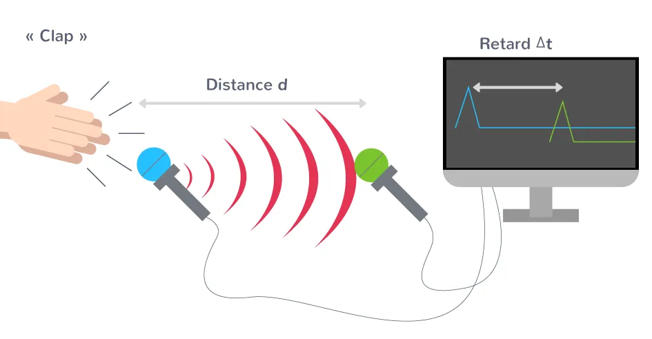

Comment mesurer la vitesse de propagation du son ?
Depuis plusieurs siècles, les scientifiques cherchent à déterminer la vitesse de propagation du son. Comment s'y prenaient-ils avant l'invention des ordinateurs ? Et comment pouvons-nous mesurer cette vitesse aujourd'hui au lycée Pierre de Fermat ?
Ta mission
Découvre quelques expériences historiques, puis apprends à mesurer un retard sur des enregistrements sonores. Tu exploiteras ensuite les mesures obtenues lors de l'expérience réalisée en classe, avant de comparer les résultats.
Attention à distinguer une date d'une durée : pour calculer la vitesse, utilise v = D / Δt, avec D en mètres et Δt en secondes.
Histoire des sciences
Comment les scientifiques ont-ils réussi à mesurer la vitesse du son ? Explore les recherches historiques, notamment celles de Colladon dans l’eau, puis réponds aux questions de l’activité.
Documents historiques illustrés — dérouler la chronologie
Quatre activités notées sur 5, soit un total sur 20.
Saisis ton NOM suivi de ton prénom (exemple : MARTIN Léa), puis choisis ta classe. Ces informations sont reprises automatiquement dans les autres évaluations. Termine chaque Genially et attends son reçu d’enregistrement.
Activité 1 — Histoire des sciences — /5
Observe comment les méthodes expérimentales de mesure de la vitesse du son ont évolué.
Activité 2 — Coup de tonnerre — /5
Pourquoi voit-on l’éclair avant d’entendre le tonnerre ? Identifie les grandeurs utiles et distingue une date d’une durée.
Documents — Préparer ta mesure
Un clap, deux microphones… Une distance à mesurer, une durée à déterminer : quelle est la célérité du son dans l’air ?
Ton objectif : comprendre ce que l’on mesure, repérer le retard Δt, puis utiliser v = D / Δt.
Avance à ton rythme. Tu peux revenir à un document pendant l’expérience. Les petites vérifications ne sont pas notées.
Document 1 sur 5
1 · Du son au signal électrique
Le clap produit un son qui se propage dans l’air. À son arrivée, le microphone convertit les variations de pression de l’air en un signal électrique. L’interface d’acquisition et l’ordinateur permettent de visualiser la tension mesurée.
Du signal sonore au signal électrique.
ClapÉmet le son.
MicrophoneConvertit le signal sonore en signal électrique.
Interface + ordinateurEnregistrent et affichent la tension.
Qu’est-ce qu’une représentation temporelle du signal ?
L’ordinateur mesure la tension électrique à des dates successives. Une représentation temporelle du signal montre comment cette tension évolue au cours du temps : la date t se lit sur l’axe horizontal, et la tension U sur l’axe vertical. Chaque point associe une date à la tension mesurée à cette date. Pour lire un point de la courbe, repère donc ses deux coordonnées : « À quelle date ? Quelle tension ? »
Lis d’abord la date, puis la tension. Ici, le point P indique : t = 2,0 ms et U = 1,0 V. Ces valeurs illustrent la lecture des axes.
À retenir : sur la représentation temporelle du signal, on lit la tension électrique U en fonction de la date t. Nous utilisons ce signal pour repérer l’arrivée du son.
Sans relire : que trouve-t-on sur l’axe vertical de la représentation temporelle du signal ?
2 · Lire les deux signaux
Repère la même variation sur les deux signaux, par exemple le premier pic vers le bas. Relève sa date t₁ pour le microphone 1 et sa date t₂ pour le microphone 2. Leur différence donne le retard de propagation :
Δt = t₂ − t₁
Relève les dates des deux premiers pics vers le bas, sur l’axe horizontal. La différence de ces dates est le décalage temporel. Les amplitudes peuvent être différentes.
Le logiciel peut afficher le retard en µs ou en ms : vérifie l’unité avant de convertir la durée en secondes.
Ne confonds pas :t₁ et t₂ sont des dates ; Δt est une durée. L’axe horizontal ne représente pas une distance.
Voir un exemple de calcul du retard
Si t₁ = 1,20 ms et t₂ = 3,20 ms, alors Δt = 3,20 ms − 1,20 ms = 2,00 ms.
À toi : quelles grandeurs faut-il relever au premier pic vers le bas de chacun des deux signaux pour calculer le décalage temporel Δt ?
3 · Préparer le montage
Place le clap et les deux microphones sur une même ligne, dans l’ordre indiqué. Le son passe d’abord par le microphone 1, puis par le microphone 2.

La distance notée d sur cette illustration correspond à D dans le parcours : elle se mesure entre les microphones. Le retard Δt se détermine sur la représentation temporelle affichée à l’écran.
Matériel
À quoi sert-il ?
Clap
Produire un son bref.
Règle graduée
Mesurer la distance D entre les microphones.
Deux microphones
Détecter l’arrivée du même son à deux positions.
Interface d’acquisition et ordinateur
Enregistrer les deux signaux sur un même axe des dates.
Avant l’acquisition : vérifie l’ordre des microphones et relève la distance D. Dans le parcours, tu renseigneras D en mètres.
4 · Mesurer puis calculer
Dans l’onglet « Enregistrements LatisPro », tu peux t’entraîner directement sur les enregistrements fournis.
Affiche un enregistrement. Choisis-le, puis clique sur « Afficher l’enregistrement ».
Relève deux dates correspondantes. Clique sur la même variation de chaque signal, par exemple le premier pic vers le bas du signal 1, puis celui du signal 2. Ajuste le zoom si nécessaire.
Relève le retard Δt. Il est affiché en millisecondes.
Calcule la célérité. Dans v = D / Δt, utilise D en mètres et Δt en secondes.
Conversion utile :1 ms = 10⁻³ s. Par exemple, 2,00 ms = 2,00 × 10⁻³ s.
Voir un exemple complet
1 · Sur le montage : mesurer DLa règle permet de mesurer la distance entre les microphones. Dans cet exemple : D = 0,680 m.2 · Sur l’écran : déterminer ΔtRelève les dates des deux premiers pics vers le bas : Δt = 3,20 ms − 1,20 ms = 2,00 ms. La représentation temporelle ci-dessus est un schéma de l’exemple.
Avec D = 0,680 m et Δt = 2,00 ms = 2,00 × 10⁻³ s :
v = 0,680 / (2,00 × 10⁻³) = 3,40 × 10² m·s⁻¹.
Le résultat comporte trois chiffres significatifs, comme les deux mesures utilisées. Ces valeurs illustrent la méthode ; utilise les données de ton enregistrement.
Au lycée : ouvre le dossier « Physique-Chimie » sur le Bureau, puis double-clique sur LatisPro.
Avant de regarder : repère la position du clap, la distance D et deux variations correspondantes des signaux.
Utilise cette aide pour une manipulation précise dans LatisPro. Si une demande de mot de passe apparaît, tu peux l’annuler.
5 · Comparer à une valeur de référence
La célérité du son dans l’air dépend de la température. Pour comparer ta mesure, choisis une référence adaptée aux conditions de l’expérience.
Valeurs de référence approchées pour l’air
Température θ (°C)
Célérité v (m·s⁻¹)
−10
325
0
331
10
337
20
343
30
349
Pour comparer ta mesure à la référence : vérifie les unités, la distance D et les dates relevées. Une mesure expérimentale comporte une incertitude : un écart avec la valeur de référence ne signifie absolument pas que l’expérience est ratée. Pour interpréter cet écart, il faut tenir compte de l’incertitude de la mesure.
Pour aller plus loin : calculer l’écart relatif
L’écart relatif exprime l’écart entre la valeur expérimentale et la valeur de référence en pourcentage :
Écart relatif = |vexp − vréf|vréf × 100 %
Exprime les deux célérités dans la même unité. Les barres |…| signifient que l’on utilise la valeur absolue de la différence.
L’écart relatif ne remplace pas l’incertitude et ne suffit pas, seul, à conclure à la compatibilité des valeurs.
Sans relire : lorsque la température de l’air augmente entre −10 °C et 30 °C, la célérité du son…
Avant de poursuivre, explique avec tes mots
Pourquoi le second signal arrive-t-il plus tard ? Quelle distance et quelle durée utilises-tu pour calculer v ?
Comparer avec une réponse possible
Le son met une durée Δt pour parcourir la distance D entre les deux microphones. Sa propagation n’est pas instantanée : le microphone 2, plus éloigné du clap dans ce montage, reçoit le son après le microphone 1.
S’entraîner sur des enregistrements LatisPro
Les enregistrements fournis ont été réalisés à une température de 22,2 °C.
Ces enregistrements ont été réalisés avec le logiciel LatisPro lors d’une expérience. Compare les deux signaux et mesure leur décalage temporel en relevant les dates de deux variations correspondantes.
Axe des dates : étalonnage automatique. Les dates proviennent directement des données numériques de chaque enregistrement LatisPro : tu n’as pas besoin de sélectionner deux graduations ni de renseigner leur écart. Chaque fois que tu changes d’enregistrement, l’axe des dates est adapté et les anciens réticules sont supprimés.
Mesurer le retard Δt : 1. Choisis un enregistrement, puis clique sur « Afficher l’enregistrement ». 2. Au besoin, ajuste le zoom temporel. 3. Clique sur une variation identifiable du signal du microphone 1 (par exemple le premier pic vers le bas) pour placer le premier réticule. 4. Clique sur la variation correspondante du signal du microphone 2 pour placer le second réticule. 5. Lis le retard Δt en millisecondes. Pour recommencer sur le même enregistrement, utilise « ↻ Recommencer la mesure ».
Clique une première fois sur une variation identifiable du signal du microphone 1.
Pour obtenir une mesure fiable, place les curseurs sur deux variations correspondantes des signaux. Si nécessaire, augmente le zoom temporel avant de relever Δt.
Notre expérience — Relevé sur la paillasse du professeur
À partir de l’expérience réalisée au bureau, note la distance D entre les microphones et le retard Δt mesuré sur les signaux. Exprime D en mètres et Δt en secondes pour calculer la vitesse du son.
Chaque binôme saisit uniquement les valeurs relevées sur l’ordinateur du professeur pendant l’expérience en classe, et non les données des enregistrements d’entraînement.
Mesures de mon binôme
Ces mesures ne sont pas encore transmises au professeur.
Saisis uniquement la classe, le numéro du binôme, la distance D en mètres et le retard Δt en millisecondes, puis clique sur « Envoyer les mesures de mon binôme ». La célérité est calculée automatiquement. Tu peux utiliser une virgule ou un point décimal.
Résultats de la classe — Analyse statistique
Consulte les résultats collectifs uniquement, sans accès aux données individuelles.
La synthèse de la classe sera disponible lorsque les mesures auront été rassemblées et vérifiées.
Calculs attendus : moyenne de v, écart-type expérimental s, incertitude-type sur la moyenne u(v̄) = s / √n.
La dispersion des mesures doit être interprétée en fonction du protocole réellement utilisé en classe.
Présentation des résultats expérimentaux
À partir des résultats collectifs, présente la mesure de la célérité du son dans l’air sous la forme d’une valeur accompagnée de son incertitude-type, puis d’un encadrement. Complète chaque étape avec tes propres calculs.
Document A — L’incertitude-type
L’incertitude-type sur la mesure d’une grandeur M fournit une estimation de l’étendue des valeurs que l’on peut raisonnablement attribuer à la grandeur mesurée.
Pour n mesures indépendantes :
u(M) = σ / √n
σ désigne l’écart-type expérimental des mesures et n leur nombre.
On peut écrire le résultat sous la forme :
M = M̄ ± u(M)
Ou, sous la forme d’un encadrement :
M̄ − u(M) ≤ M ≤ M̄ + u(M)
Document B — L’écriture du résultat d’une mesure
Pour écrire le résultat avec un nombre adapté de chiffres significatifs :
Arrondis l’incertitude-type par excès à un seul chiffre significatif.
Arrondis la valeur moyenne au même rang décimal que le dernier chiffre de l’incertitude-type arrondie.
Calcule les deux bornes de l’encadrement en utilisant les valeurs arrondies.
Exprime toutes les grandeurs dans la même unité et conserve le même rang décimal pour les bornes.
À toi — Écriture du résultat de la célérité du son
Ton nom et ta classe pour la note sur 5
Pour enregistrer tes notes : saisis ton NOM suivi de ton prénom (exemple : MARTIN Léa), puis choisis ta classe. Ton nom et ta classe sont automatiquement repris dans les autres activités notées. Vérifie-les avant chaque envoi : ta meilleure note dans chacune des quatre activités sera retenue pour calculer ton total sur 20.
Étape 1 — Valeurs sans arrondi : relève les données dans l’onglet « Résultats de la classe » et effectue le calcul.
v = (… ± …) m/s (valeurs sans arrondi)
Étape 2 — Arrondis adaptés : applique les règles du document B.
v = (… ± …) m/s
Étape 3 — Encadrement final : calcule les deux bornes et renseigne-les.
… m/s ≤ v ≤ … m/s
Tes valeurs sont conservées sur cet appareil. Elles ne sont pas envoyées à l’enseignante.
Je m’entraîne — Mesurer la vitesse du son
Lis attentivement chaque question. Selon la question, détermine la célérité du son, la distance entre les microphones ou le retard de propagation. Veille à convertir les grandeurs dans les unités appropriées. L’écriture scientifique n’est pas exigée. Saisis directement la valeur numérique décimale, avec une virgule ou un point, sans l’unité. Utilise la calculatrice si nécessaire.
Graphiques en image : étalonnage manuel nécessaire. Contrairement aux enregistrements LatisPro, une image fixe ne contient pas de dates numériques directement exploitables. Clique successivement sur deux graduations connues de l’axe horizontal, saisis la durée qui les sépare en millisecondes, puis relève les dates de deux variations correspondantes, une sur chaque signal. Le retard Δt est alors déterminé à partir de ton étalonnage. Pour chaque exercice, saisis uniquement le nombre dans l’unité indiquée. Envoie tes réponses avant de consulter leur correction. Elle ne s’affichera qu’après confirmation de l’enregistrement.
Pour enregistrer tes notes : saisis ton NOM suivi de ton prénom (exemple : MARTIN Léa), puis choisis ta classe. Ton nom et ta classe sont automatiquement repris dans les autres activités notées. Vérifie-les avant chaque envoi : ta meilleure note dans chacune des quatre activités sera retenue pour calculer ton total sur 20.
Évaluation : deux calculs de célérité, deux calculs de distance et un calcul de retard, dans un ordre tiré au hasard. Les résultats des mesures peuvent varier selon les conditions de l’expérience.
Bilan de ton activité
Tu sais maintenant distinguer une date d’une durée, mesurer le retard Δt entre deux signaux et calculer la vitesse de propagation du son dans l’air : v = D / Δt.
Compare ton résultat à une valeur de référence adaptée à la température de l’air. Identifie ce qui peut expliquer les écarts entre les mesures.
Si tu as envoyé des réponses numériques, attends une confirmation explicite. En l’absence de confirmation, préviens ton enseignante avant de recommencer.